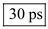
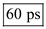
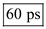
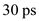
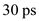
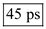
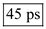

Determine the factor  using the average current approach.
using the average current approach.
Substitute 0.4 V for threshold voltage,  and 1.2 V for supply voltage,
and 1.2 V for supply voltage,  .
.
Determine the inverter delay for high-to-low transition.
Substitute for , for C, for
for , for C, for  , 1.5 for and 1.2 V for
, 1.5 for and 1.2 V for  .
.
Thus, the inverter delay is .
 for ,
for ,  for C, for , 3 for
for C, for , 3 for  and 1.2 V for
and 1.2 V for  .
. is .
is . .
.
 and for
and for  .
. is .
is .